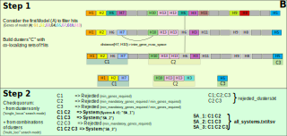
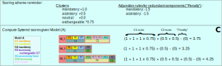
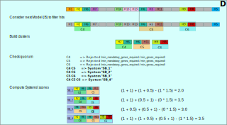

MacSyFinder’s functioning¶
Functioning overview¶
MacSyFinder is run from the command-line using a variety of input files and options. See Input dataset for more details. Below follows a description of its overall functioning.
A. Searching for Systems’ components¶
Initially, MacSyFinder searches for the components of the System(s) to detect by sequence similarity search.
1. From the list of System(s) to detect, a non-redundant list of components to search is built. For each system, the list can include:
mandatory components
accessory components
neutral components
forbidden components
exchangeable components that can be functionally replaced by other components (usually by analogs or homologs). These other components are thus also added to the list of components to search.
See here for more details on writing MacSyFinder’s models.
2. HMMER is run on the corresponding set of components’ HMM profiles, and the hits are filtered according to the criteria defined by the user or by default (see Hmmer options and for more, the API report object page). This step, and the extraction of significant hits can be performed in parallel (-w command-line option). See the Command-line options, and the search_genes API for more details.
B. Hits browsing¶
The following steps depend on whether the input dataset is ordered (complete or nearly complete genome(s)), or unordered (metagenomes, or unassembled genome(s)) (see the Input dataset section).
In the case of ordered datasets (ordered_replicon or gembase search mode), the hits are filtered to keep only hits related to the system’s model we are looking for. These hits are used to build clusters of co-localized genes as defined in the macsy-model files. These clusters are then screened to check for the model specifications such as the minimal quorum of “Mandatory” or “Accessory” genes, or the absence of “Forbidden” components.
When the gene order is unknown (unordered search mode) the power of the analysis is more limited. In this case, the presence of systems can only be suggested on the basis of the quorum of components - and not based on genomic context information.
For ordered datasets: building clusters of components¶
The following two steps are reiterated for each model being searched.
The search starts with the filtering of hits to only keep the hits that are listed in the model (mandatory, accessory, neutral, forbidden, exchangeable).
MacSyFinder searches for sets of contiguous hits to build clusters, following the (co-localization criterion) for each replicon, as defined in the MacSyFinder’s model. Two hits are deemed contiguous if their genomic location is separated by less than d protein-encoding genes, d being the maximum of the two inter_gene_max_space parameters from the two genes with hits (system-wise, or gene-specific parameter). The loner components may form a cluster on their own.

Once performed for each model searched, the next step is performed.
Note
The clusters that do not fulfill the quorum requirements are stored in the rejected_clusters.txt file.
For unordered datasets:¶
For each model being searched:
The Hits are filtered by model.
They are used to check if they reach the quorum (i.e., the clustering step is skipped as there is no notion of genetic distance in this search mode).
For each system, if the quorum is reached, hits are reported in the all_systems.tsv output file. It has to be noted that forbidden components are listed too, as they can also be informative for the user.
Note
The “unordered” mode of detection is less powerful, as a single occurrence of a given model is filled for an entire dataset with hits that origin is unknown. Please consider the assessment of systems with caution in this mode.
For unordered datasets, the search so ends, and MacSyFinder generates the final output files.
C. Computing candidate Systems’ scores (ordered mode)¶
This step only applies to the most powerful search mode, i.e., on ordered datasets. The whole step is NEW in V2
The new search engine implemented since version 2.0 of MacSyFinder better explores the space of possible Solutions regarding the presence of Systems in replicons analysed. It creates clusters of hits for Systems’ components separately for each System searched, and therefore might find candidate occurrences of Systems that overlap in terms of components. Moreover, if a System is possibly encoded at several locations on the replicon analysed (option multi_loci set to “True” in the model), this calls for a combinatorial screening of the different clusters to assemble them into coherent systems regarding the macsy-models.
For a given model, clusters are used to “fill up” Systems’ occurrence(s) according to the quorum criteria defined in the System’s model (see function
macsypy.system.match()):The min_genes_required and min_mandatory_genes_required thresholds must be reached.
In the case of the single-locus system search mode (default), each cluster in addition to potential loners are evaluated for System’s assessment separately.
In the case of the multi-loci system search mode (
multi_loci=True), each possible combination of clusters is confronted to the quorum of the System being examined.
The sets of clusters that fulfill the quorum are reported as candidate Systems in the all_systems.txt and all_systems.tsv output files (see Output format), and they obtain a System’s score (see below).
The clusters that do not allow to form a candidate System are reported in the rejected_clusters.txt output file.
We introduce a scoring scheme for candidate Systems, to easily separate combinations of clusters that are readily more similar to a system’s model than others.
The assumptions behind this scoring scheme are the following:
We set a score for the different types of genes/components when defining a cluster’s score. Here are the default values, but these can be changed:
+1.0 is added when a mandatory gene is present
+0.5 is added when an accessory gene is present
+0.0 is added when a neutral gene is present
*0.8 (a factor of 0.8) is applied to the above-scores when the function is fulfilled by an exchangeable gene
*0.7 (a factor of 0.7) is applied to the above-scores if the gene is a loner and multi system component.
When combinations of clusters are explored in order to fulfill macsy-models’ requirements and build candidate systems (“multi_loci” mode, several clusters can make a complete System), we sum the score of clusters to assign a System’s score.
In addition, we want to favor concise sets of clusters to fulfill a System’s model. We thus penalize the adjunction of a cluster to a candidate System when this cluster does not bring any new components to the System’s quorum, or when it brings redundant components. Thus:
-1.5 is added when a redundant mandatory gene is added when adjuncting the cluster to a candidate System
-1.5 is added when a redundant accessory gene is added when adjuncting the cluster to a candidate System
for the components that are loner and multi system, the score of the loner component is added only if the function is not fulfilled in the other clusters. In this case, even if there are several occurrences of the component, it is counted only once (and no penalty is applied).
Only candidate sets of clusters that fulfill a macsy-model and that are thus designated candidate Systems, obtain a System’s score
In summary, a Systems’s score is made of two parts: the sum of the scores of the Clusters it is made of, plus a penality part to avoid too much component’s redundancy in Cluster’s combinations. The systems’ scoring step is exemplified in this figure:

D. Repeat operations B and C for the other models being searched¶
This search for candidate Systems from different models results in a number of possible Solutions representing combinations of putative sets of Systems in the analysed dataset.
E. Computing possible Solutions, defining the best one (ordered mode)¶
At the end of the previous step MacSyFinder has computed all potential Systems present in the replicon, made of combinations of Clusters and loner components that fulfill the model’s requirements, which are themselves made of a subset of Hits (remember, Hits are at 1st filtered and treated separately for each model of System to be detected). Candidate Systems may thus overlap by being partly made of the same components, or even partly being made of the same Clusters.
We define a Solution as being a set of compatible Systems, i.e. that do not have any overlaps between their components. All possible Solutions are combinatorially explored and consist in all possible sets of compatible Systems.
A scoring scheme enables to separate between sets of Solutions. A Solution’s score is basically the sum of its Systems’ scores.
The overall procedure of exploring the space of all possible Solutions while finding the optimal one,
i.e. that with the maximal score, is performed at once using a graph solution to this problem, implemented in the networkx package.
We create a graph where each potential System is a vertex, and we create an edge between pairs of vertices if they do not share any components (compatible Systems). Once the graph is created we look for the maximum clique which maximizes the score. This allows to provide the user with one, or multiple Solutions that have the best score possible among all combinations of compatible Systems.


{kind=link}
{kind=link}
{kind=link}
{kind=link}